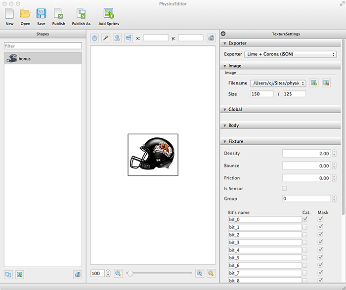
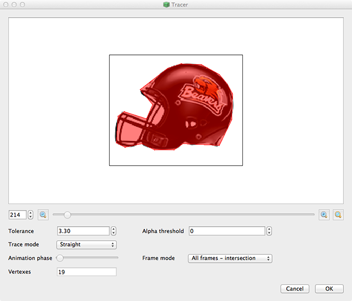
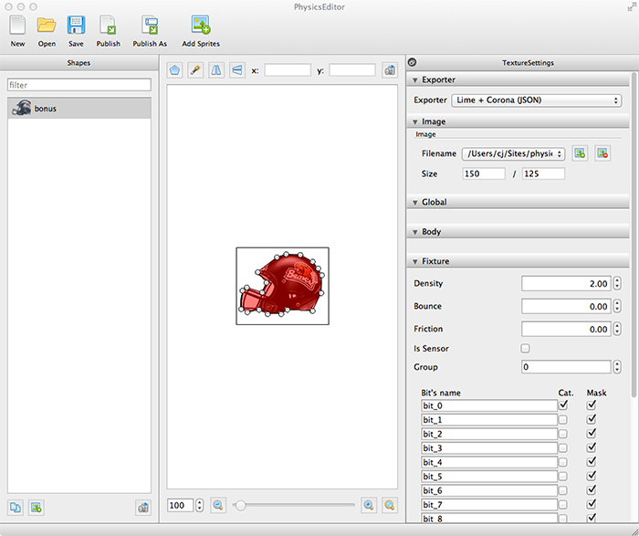

Intro to Phaser's P2 Physics Engine
By: C.J. Jenkins
Go Right to the Game We are Making!
Table of Contents
- Tutorial Goal and Learning Objectives
- Target Audience
- What is Phaser?
- Why learn to use it?
- Getting Set Up
- Set Up the HTML Page
- Intialize Phaser, Preload, Create, Update
- What is it we are Building Again?
- What is the P2 Physics Engine?
- Back to Building: Preload Those Images!
- Let There Be Sprites!
- The Rest of Creation
- Update!
- spawnLetter()
- Physics Editor
- Back to spawnLetter()
- destroySprite()
- checkLetter()
- checkWinCondition()
- Conclusion
Tutorial Goal and Learning Objectives
Our goal is to build a simple physics-based word game which will teach you the basics of the powerful P2 Physics engine that is included with the Phaser framework. Go check out the goal game here, and then come back and we'll learn how to make it!
You'll come out of this tutorial with exposure to the following concepts:
- Setting up the basic Phaser game framework
- Loading assets
- Creating assets in the game
- Setting up the P2 physics engine
- Configuring world physics
- Creating rectangular and polygonal physics bodies
- Creating static bodies
- Configuring collision groups
- Random sprite generation and positioning
- Creating input events and handlers
- Deleting assets from the game
- Outputting text
- Monitoring a win condition
Target Audience
To get the most out of this tutorial I'd recommend you have a basic background in the fundamentals of programming (variables, control structures, functions, etc.) and some experience with JavaScript and building web pages. You'll also need to be able to set up a web development server or have one on which to run your code. This is also aimed at a slightly more Phaser-exposed audience. You don't need much experience, but I would recommend at least skimming this tutorial to get a taste of the framework: Making Your First Phaser Game. We'll be covering several of the basics in this guide as well, but we'll spend less time on them and more on the P2 physics engine.
What is Phaser?
Phaser is an HTML5 2D game development framework written entirely in JavaScript. It utilizes the HTML5 canvas element and WebGL (Web Graphics Library--an offshoot of OpenGL) to visually display interactive content. It also integrates and plays host to a number of leading JavaScript libraries facilitating the development of feature-rich games for both browser and mobile platforms. If you can think of a 2D flash game or mobile app, Phaser probably has the horsepower to recreate it.
Why learn to use it?
HTML5 game development has been making a thunderous impact on the industry due to its ability to display on just about any device with a modern browser without the need for plugins, unlike Flash. HTML5 will likely beat out Flash as the dominant development technology as tools become richer and developers become more experienced with it. The latter shouldn't be much of an issue either. Many of the toolsets available today are heavily influenced by the Flash workflow, Phaser included.
If you are interested in the other available frameworks and libraries out there, there is a very comprehensive list here. For those new to game development, Phaser offers a great introduction to the basic elements of game design, in a format that is relatively easy to get into with a basic programming and JavaScript background. It also has great support, is frequently updated, is completely open source, and has a very helpful community that indicates this is a technology that will be around for years to come.
Getting Set Up
There are a number of logistical things you'll need to get set up in order to proceed. Fortunately, Photon Storm, the developer of Phaser, has a great step-by-step guide. Once you've completed those steps, you should be ready to continue with this guide. (FYI, at the time of this writing, release 2.0.7 was the latest version of Phaser, and that's what we'll be using.)
In order to follow along, you can download all the source code and assets below.Set Up the HTML Page
First, we need to set up the HTML page that will hold our game. Phaser requires that we create a div element which it will then automatically populate later with a canvas and all the other stuff it needs to display our game. We also need to give it an id. Give it something simple like 'game_div'. The entirety of your HTML page should look like this (the most important part being the game_div):
<!DOCTYPE html>
<html>
<head>
<meta charset="utf-8" />
<title>Physics Test</title>
<link rel="stylesheet" type="text/css" href="how_to.css">
<script type="text/javascript" src="phaser.min.js"></script>
<script type="text/javascript" src="raining_letters.js"></script>
</head>
<body>
<div id="content">
<h1>It's Raining Letters!</h1>
<div id="game_div"></div>
</div>
</body>
</html>
Intialize Phaser, Preload, Create, Update
From here on out we will be working in our raining_letters.js file. Here we have the foundation of our game. At the very top, the standard is to create variable called 'game' which is an instantiation of a Game object (the name 'game' is not required, but it is standard practice). We give a width (1000px) and a height (700px) that the world will be.
Then we set Phaser.AUTO which will attempt to render our game in WebGL if supported by the browser, or it will fall back to strictly using the canvas if necessary. Unless you have specific reasons to specify one or the other, keeping it on AUTO is the safest way to go. Next, we feed it the name of our div from earlier, 'game_div.' Finally, we define the names of the three core functions of the Phaser framework--preload, create, update.
// Initialize Phaser, and set game world to be 1000px by 700px
var game = new Phaser.Game(1000, 700, Phaser.AUTO, 'game_div',
{preload: preload, create: create, update: update});
// --------------------------------------------------
// Function: preload
// Receives: None
// Description: Load our assets before starting the
// game to keep things smooth once
// playing.
// --------------------------------------------------
function preload() {
}
// --------------------------------------------------
// Function: create
// Receives: None
// Description: Spawn assets in the game world and
// intialize various systems and objects.
// --------------------------------------------------
function create() {
}
// --------------------------------------------------
// Function: update
// Receives: None
// Description: Performs embedded code at 60fps
// --------------------------------------------------
function update() {
}
These three functions will usually be in every game you make. They aren't all necessarily required, however.
First, we have the preload function which is where we will load all our images, sounds, and other external assets prior to the start of the game. Since games are multimedia-heavy, we want all this work to be done up front.
The create function will be where we actually 'spawn' our various elements into the game world so we can see and interact with them.
Finally, the update function executes anything within it at 60 frames per second (fps) (by default). This is often how we accomplish predetermined movement, effects, etc.
With these in place, reload your html page in the browser and you should see a nice big black box with the title above it.
What is it we are Building Again?
The game we are building, cleverly titled Raining Letters, basically has letters fall from the sky, and the goal of the game is to get the letters in the goal phrase (GO BEAVS) to hit the ground. The player can click on letters to destroy them and make room for others. When all the correct letters have hit the ground, we reward the user with some fun bonus sprites to play with.
This simple concept exercises a lot of the basic utility of the P2 physics engine, which is the focus of this guide.
What is the P2 physics engine?
It is probably better to start by defining a physics engine in general. Basically, a physics engine allows us to make items in our game world move with gravity and bounce off each other similarly to objects in the real world. Phaser contains three different physics engines: Arcade, Ninja, and P2. The great thing about Phaser is you can actually use a combination of them if you so choose as they all have their various strengths and weaknesses. Though keep in mind they all behave independently from one another. You'll see this in action later.
Rather than explaining the differences exhaustively here, this Stack Exchange answer from ashes999 nicely summarizes things.
In our goal game, we are most interested in using the P2 engine because it allows for polygonal collisions which makes collisions more interesting, but the power extends much, much further with the various constraints you can apply and the ability to model springs. What this guide will allow you to do is get the P2 framework going so you can go explore all that depth as you go on to make your own games. This will also hopefully help you avoid several of the stumbling blocks that usually occur when trying to follow all the Arcade-based Phaser game tutorials out there, which are the vast majority.
[It is important to note that the P2 engine has its own standalone library as well. It is actually quite a bit more powerful than the current version within Phaser, but it is also much more difficult to use. The good news is that with the active developers over at Photon Storm working away, I'm sure more of the advanced features will be making their way over to Phaser sooner rather than later, and in more easy to use formats. Most P2 tutorials online are for this independent edition, and they don't usually translate to Phaser directly. So just be on the lookout for P2.js code versus Phaser code when looking to extend your Phaser P2 knowledge.]
Back to Building: Preload Those Images!
Let's start fleshing things out by preloading all our images (called sprites in game dev lingo) in one fell swoop:
function preload() {
// Load sprite images
game.load.image('background', 'assets/background.png');
game.load.image('particle', 'assets/particle.png');
game.load.image('ground', 'assets/ground.png');
game.load.image('A', 'assets/A.png');
game.load.image('B', 'assets/B.png');
game.load.image('C', 'assets/C.png');
game.load.image('D', 'assets/D.png');
game.load.image('E', 'assets/E.png');
game.load.image('F', 'assets/F.png');
game.load.image('G', 'assets/G.png');
game.load.image('J', 'assets/J.png');
game.load.image('O', 'assets/O.png');
game.load.image('S', 'assets/S.png');
game.load.image('V', 'assets/V.png');
game.load.image('Y', 'assets/Y.png');
game.load.image('Z', 'assets/Z.png');
game.load.image('bonus', 'assets/bonus.png');
}
Nothing happens on the screen yet, but trust me, we're making progress. As you can see we have a background, a particle, the ground our letters will bounce off of, all our letters, and a little bonus sprite. You'll notice each loaded image has a key we've assigned it as its first parameter, and where it is located within our project directory as the second. The key is how we will be referencing each image to add it to our game.
Also, add these global variables between your preload() and create() functions. We'll talk about them as they become relevant.
// Global variables
var wordArray = {"G": false, "O": false, "B": false,
"E": false, "A": false, "V": false, "S": false};
var gameWon = false;
var ground;
var letterCollisionGroup;
var groundCollisionGroup;
var NEXT_SPRITE_TIME = 1000;
var style1 = {font: "25px Arial", fill: "#ffffff", align: "center"};
var style2 = {font: "50px Arial", fill: "#ffa500", align: "center"};
var instructions;
var letter;
Let There Be Sprites!
Now lets get some of those guys onto the screen. In your create() function, add the following:
function create() {
//Add our background image
var background = game.add.tileSprite(0, 0, 1000, 700, 'background');
background.fixedToCamera = true;
// Add some instructions for the user
instructions = game.add.text(game.world.centerX, 32,
"Let the letters that spell GO BEAVS hit the ground!", style1);
instructions.anchor.set(0.5);
instructions = game.add.text(game.world.centerX, 82,
"Click letters to destroy them!", style1);
instructions.anchor.set(0.5);
}
This puts the 1000px x 700px background on the screen anchored at 0px x 0px (use tileSprite for backgrounds in general to keep them out of the way) and displays our instructions at the top for how to play. Text is added by specifying its X and Y coordinates, the string itself, and its style rules. Notice we use the previously created global style variables.
The Rest of Creation
Let's walk line-by-line through the rest of the create() function. JavaScript is such a non-linear language, especially in this case, that we'll need to table some discussions for later, but this will serve as a great code hub to get our bearings with what is going on.
First we initialize the P2 physics engine with the startSystem function.
// Initialize the P2JS physics engine
game.physics.startSystem(Phaser.Physics.P2JS);
Next, we set the system to fire impact events (basically flags that something hit something else).
// Make sure the engine sends out events when impacts occur
game.physics.p2.setImpactEvents(true);
Restitution is fancy physics-speak for how bouncy our world will be (how much objects will bounce when in collisions).
// Set the overall 'bounciness' of the world
game.physics.p2.restitution = 0.5;
setBoundstoWorld takes several boolean arguments. The fifth parameter is always false in our case, but the other four correspond to the four walls of the game world. If true, our objects will bounce off the walls. We don't want the top wall to do this (to let our letters rain down) so we set the third parameter to false.
updateBoundsCollisionGroup is required as of this version of Phaser to ensure the world is treated as a collision group (explained shortly).
// Set the world bounds to recognize impacts on all sides except the top
game.physics.p2.setBoundsToWorld(true, true, false, true, false);
game.physics.p2.updateBoundsCollisionGroup();
Next, we set the world's gravity in the y-direction which is pretty self-explanatory. You can play with this to taste.
// Set the gravity of the world
game.physics.p2.gravity.y = 50;
The game.input.onDown function calls the destroySprite function whenever we click on the screen. This is how we'll destroy our letters. The function itself will be described a little later.
// When we click down with the mouse,
// call the destroySprite function on the clicked spot
game.input.onDown.add(destroySprite, this);
Now we add our first true sprite--the ground! We plop it down right at the bottom of the screen (0px x 680px). The image by default is 'anchored' at its upper-left corner, so that's how the pixel definition places it.
// Create the ground
ground = game.add.sprite(0, 680,'ground');
Now we apply some physics to our sprite. When a sprite has physics behind it we refer to it as a 'body.' First we enable it as a body, then set a built in P2 shape, the rectangle shape, and get it placed so that it perfectly overlaps our ground sprite. (If you need to visualize the body itself, when using the game.physics.p2.enableBody(ground); command, add a second argument 'true' to have the screen draw the shape for debugging.) Now we set the body to be static. This makes it unaffected by gravity or collisions. We set the anchor point to the upper left, even though it is the default, in case we'd like to adjust it later.
// Enable physics for the ground,
// set it's rectangular physics body size and position,
// make it static so that it stays in one place,
// and set its point of reference for
// positioning to the left upper corner
game.physics.p2.enableBody(ground);
ground.body.setRectangle(1000, 20, 500, 10);
ground.body.static = true;
ground.anchor.setTo(0, 0);
Now we create what are called collision groups. These are a crucial aspect of working with P2 physics. Without them our bodies will misbehave and fail to collide with each other. We make one group for the letters and one for the ground. Recall the game.physics.p2.updateBoundsCollisionGroup(); command from earlier. That was basically setting up the collision group for the world.
// Create two collision groups
letterCollisionGroup = game.physics.p2.createCollisionGroup();
groundCollisionGroup = game.physics.p2.createCollisionGroup();
Next we tell the program that the ground goes in the groundCollisionGroup, and that when it collides with something in the letterCollisionGroup, fire the function checkLetter(), with a reference to itself (this). We will look at checkLetter a little further down the guide.
// Put the ground in the groundCollisionGroup and set it to collide with letters
// and fire the checkLetter function when it does so
ground.body.setCollisionGroup(groundCollisionGroup);
ground.body.collides(letterCollisionGroup, checkLetter, this);
When we destroy letters, as you saw in the game, we create a nice particle explosion to provide added fun-factor and feedback for the player. We create an emitter object, tell the emitter to make particles using the particle image that we loaded up before, and set its gravity to 100. Now this brings us to an interesting point. P2 actually doesn't currently support (within Phaser) discrete gravity settings for individual bodies. So why do we bother here? Actually, the way the particle system was integrated into Phaser, it only supports Arcade physics and defaults to it. Arcade physics system cannot interact with P2, but that's OK for our purposes of just adding some flare. The cool part to note is that, as you can see, we can have multiple physics engines running at once!
// Create an emitter to host our particle effects when destroying letters
// Note: Phaser's particle system currently only supports the ARCADE physics engine
emitter = game.add.emitter(0, 0, 1000);
emitter.makeParticles('particle');
emitter.gravity = 100;
We use the stock JavaScript function setInterval to call a function which spawns letters every second (defined with the constant NEXT_SPRITE_TIME). We look more into the spawnLetter() function shortly.
// Create a new letter above the world every second
setInterval(function() {spawnLetter()}, NEXT_SPRITE_TIME);
Update!
Before looking at our game-specific functions, let's glance at our update() function because it's short:
function update() {
// At every frame, check if the user has won the game
checkWinCondition();
}
Remember, the update function calls its code at every frame (at 60 frames per second). In our case, we just have one function which constantly checks if the player has won the game.
spawnLetter()
// --------------------------------------------------
// Function: spawnLetter
// Receives: None
// Description: Generates random falling letter sprites
// with accompanying physics data and
// configurations
// --------------------------------------------------
function spawnLetter(){
// Generate a random number
var randomNumber = game.rnd.integerInRange(1, 13);
var randomLetter;
// Pick a letter to spawn based on the number
if(randomNumber == 1)
{
randomLetter = 'A';
}
else if(randomNumber == 2)
{
randomLetter = 'B';
}
else if(randomNumber == 3)
{
randomLetter = 'C';
}
else if(randomNumber == 4)
{
randomLetter = 'D';
}
else if(randomNumber == 5)
{
randomLetter = 'E';
}
else if(randomNumber == 6)
{
randomLetter = 'F';
}
else if(randomNumber == 7)
{
randomLetter = 'G';
}
else if(randomNumber == 8)
{
randomLetter = 'J';
}
else if(randomNumber == 9)
{
randomLetter = 'O';
}
else if(randomNumber == 10)
{
randomLetter = 'S';
}
else if(randomNumber == 11)
{
randomLetter = 'V';
}
else if(randomNumber == 12)
{
randomLetter = 'Y';
}
else if(randomNumber == 13)
{
randomLetter = 'Z';
}
if(gameWon == true)
{
randomLetter = "bonus";
}
// Spawn the letter beyond the top bounds of
// the game world to make it fall
// like rain from the sky
var newLetter = game.add.sprite(game.world.randomX,
game.rnd.integerInRange(-200, -500), randomLetter);
game.physics.p2.enableBody(newLetter);
// Remove any collision shapes aready applied to the body
newLetter.body.clearShapes();
// Load our polygonal JSON physics data
newLetter.body.loadPolygon('physicsData', randomLetter);
// Set the letter to collide with the world bounds
newLetter.body.collideWorldBounds = true;
// Add the letter to the letterCollisionGroup
newLetter.body.setCollisionGroup(letterCollisionGroup);
// Set which groups the letter will collide with
newLetter.body.collides([letterCollisionGroup, groundCollisionGroup]);
}
This function is pretty simple, but adds a lot to the fun-factor of the game. Basically, we pick a random number using Phaser's own game.rnd.integerInRange() function to use in some if-statements to pick a random one of our letters to create. You'll also note, if the game has been won, this is where we create our bonus sprite. After picking the sprite, we choose a random x and y value (above the visible world) and generate the sprite. Now we start to pump it through a set of commands similar to what we did with the ground sprite in the create() function.
However, what we are about to do does vary in an important way from the ground example. Here we are going to make our sprite a polygonal body (one of the selling points of P2). To do this we need some extra software.
Physics Editor
In order to create polygonal bodies, we need to read in a data file telling Phaser where exactly the border of our image is since we don't want it to just be the rectangular bounds of the image file. There is a JSON format that Phaser can read in, and fortunately to create that format there already exists a piece of software called Physics Editor which we can use. Go download it now.
Once downloaded and installed, open the program, click 'Add Sprites' and select all the sprites for which you'd like to create physics data. In the picture below we've selected our bonus sprite. Notice the buttons above the sprite preview. Our goal with these is to simply trace a mask around the sprite's shape and export those coordinates as a JSON file that Phaser can parse.
The magic wand is the quickest way to do this. Click the magic wand button and you'll be met with a tracing window like the one below:
You can move the points around manually and adjust the sliders if you desire, but since we want a mask to pretty snuggly mold to the entire shape of our image, set your settings as you see in the above image and you should be in pretty good shape (no pun intended).
Now you should have a similar window to the one above. Under the Exporter frame, select 'Lime + Corona (JSON),' then click the Publish As button. Select a name for the JSON file you are creating and now you should have your physics data!
Take a look at the JSON file and you can see how it has mapped out the tracing we made.
"bonus": [
{
"density": 2, "friction": 0, "bounce": 0,
"filter": { "categoryBits": 1, "maskBits": 65535 },
"shape": [ 66, 15 , 49, 56 , 35, 39 ]
} ,
{
"density": 2, "friction": 0, "bounce": 0,
"filter": { "categoryBits": 1, "maskBits": 65535 },
"shape": [ 83, 100 , 124, 22 , 133, 33 , 139, 44 , 138, 73 , 124, 102 ]
} ,
{
"density": 2, "friction": 0, "bounce": 0,
"filter": { "categoryBits": 1, "maskBits": 65535 },
"shape": [ 10, 69 , 17, 64 , 42, 72 , 37, 100 , 18, 104 , 8, 99 ]
} ,
{
"density": 2, "friction": 0, "bounce": 0,
"filter": { "categoryBits": 1, "maskBits": 65535 },
"shape": [ 124, 22 , 83, 100 , 73, 107 , 66, 15 , 81, 10 , 104, 11 ]
} ,
{
"density": 2, "friction": 0, "bounce": 0,
"filter": { "categoryBits": 1, "maskBits": 65535 },
"shape": [ 42, 72 , 49, 56 , 73, 107 , 51, 107 , 37, 100 ]
} ,
{
"density": 2, "friction": 0, "bounce": 0,
"filter": { "categoryBits": 1, "maskBits": 65535 },
"shape": [ 66, 15 , 73, 107 , 49, 56 ]
}
You may notice that the program's free license only allows for ten sprites to be analyzed. Fortunately, we can get around this by simply doing multiple exports and copying and pasting the JSON together ourselves. (Definitely support the company if you like their product though!) Other than merging all our bodies into one file though, we aren't going to touch this JSON file again.
Back to spawnLetter()
Recall we were trying to understand that last chunk of code in spawnLetter() that applies a polygonal body to our randomly generated sprite.
game.physics.p2.enableBody(newLetter);
// Remove any collision shapes aready applied to the body
newLetter.body.clearShapes();
// Load our polygonal JSON physics data
newLetter.body.loadPolygon('physicsData', randomLetter);
// Set the letter to collide with the world bounds
newLetter.body.collideWorldBounds = true;
// Add the letter to the letterCollisionGroup
newLetter.body.setCollisionGroup(letterCollisionGroup);
// Set which groups the letter will collide with
newLetter.body.collides([letterCollisionGroup, groundCollisionGroup]);
After enabling the physics body, we clearShapes(), which is a best practice when applying new complex physics data. It prevents us from accidentally merging the data with some previously active body. Now up in our preload() function, lets add one final asset: our physics data!
// Load physics data from JSON file
game.load.physics('physicsData', 'letters_test1.json');
Now as we step to our next line of code in spawnLetter(), you'll see we call loadPolygon, reference our newly added asset and pass in the letter we just created. This is passed in as a string key which is how Phaser finds the correct body's data in the JSON file. For example, if we are making the bonus sprite, randomLetter equals 'bonus'.
Next we set collideWorldBounds to true, to make the letters bounce off the left and right walls (based on how we had previously configured the world bounds in the create() function). Then, similarly to how we set up the ground, we put the new letter in the letterCollisionGroup, and tell it to collide with both other letters and the ground.
destroySprite()
// --------------------------------------------------
// Function: destroySprite
// Receives: (mouse) pointer object
// Description: Checks if you've clicked a sprite
// then removes it from the game with
// a particle explosion effect.
// --------------------------------------------------
function destroySprite(pointer){
// Get the body we clicked (if any)
var bodyClicked = game.physics.p2.hitTest(pointer.position);
// Don't do anything if we clicked the ground
if(bodyClicked[0].parent.sprite.key == 'ground'){
return;
}
// Otherwise, remove the sprite and create particle explosion
else{
bodyClicked[0].parent.sprite.kill();
// The emitter will activate wherever we clicked
emitter.x = pointer.x;
emitter.y = pointer.y;
// Emit 10 particles with a 2 second lifespan
// in all directions (first arg = true, explosion)
emitter.start(true, 2000, null, 10);
}
}
The destroySprite() function allows us to click on a body and destroy if it is of the correct type (a letter). The function takes a reference to the mouse pointer click that initiated it. We use the hitTest() P2 function on the pointer object's position to see if we actually clicked on a body, and if we did, it gets stored in bodyClicked. We can access that body's sprite key with bodyClicked[0].parent.sprite.key. We check if it is equal to 'ground' and simply return since we don't want to blow up the Earth (wrong game genre)!
If it wasn't the ground, we know we've clicked a letter (the function won't do anything if no body was clicked to begin with). We call the kill() function on the sprite and move our particle emitter where we clicked. Finally we turn on our fancy explosion with a few configurations. We set the first parameter to true to request an explosion-like effect, where particles move in all directions, and we let them stay alive for two seconds. The third parameter is frequency, but since we selected 'true' for the explosion parameter, all the particles are expelled at once, so we make it null. Finally, we want ten particles to be generated.
checkLetter()
// --------------------------------------------------
// Function: checkLetter
// Receives: the 'hit' body, the 'hitting' body
// Description: If a letter hits the ground this
// function changes the letter's color
// depending on if it exists in the goal
// word or not.
// --------------------------------------------------
function checkLetter(body1, body2){
if(body2.sprite.key.match(/[GOBEAVS]/) !== null)
{
wordArray[body2.sprite.key] = true;
body2.sprite.tint = 0x008000;
if(body2.sprite.key == "G")
{
letter = game.add.text(game.world.centerX - 150, 132, body2.sprite.key, style2);
letter.anchor.set(0.5);
}
else if(body2.sprite.key == "O")
{
letter = game.add.text(game.world.centerX - 100, 132, body2.sprite.key, style2);
letter.anchor.set(0.5);
}
else if(body2.sprite.key == "B")
{
letter = game.add.text(game.world.centerX, 132, body2.sprite.key, style2);
letter.anchor.set(0.5);
}
else if(body2.sprite.key == "E")
{
letter = game.add.text(game.world.centerX + 50, 132, body2.sprite.key, style2);
letter.anchor.set(0.5);
}
else if(body2.sprite.key == "A")
{
letter = game.add.text(game.world.centerX + 100, 132, body2.sprite.key, style2);
letter.anchor.set(0.5);
}
else if(body2.sprite.key == "V")
{
letter = game.add.text(game.world.centerX + 150, 132, body2.sprite.key, style2);
letter.anchor.set(0.5);
}
else if(body2.sprite.key == "S")
{
letter = game.add.text(game.world.centerX + 200, 132, body2.sprite.key, style2);
letter.anchor.set(0.5);
}
return;
}
else
{
body2.sprite.tint = 0xff0000;
}
}
This function allows us to manipulate the game and our sprites based on collision events. There are two basic cases for this function: either a letter hits the ground that is in the phrase GO BEAVS, or a letter hits the ground that is not in that phrase.
In the former case, we play with a bit of basic sprite manipulation and tint the sprite green. Recall that in our global variables we had declared an associative array with the goal phrase in it, and at each character key we had a boolean value. Now is our chance to turn the currently impacting key letter's boolean value to true! Then we figure out what valid letter had hit the ground and update the screen with some text showing the user's progress toward spelling GO BEAVS. Finally, if it was an invalid character, we tint it red.
checkWinCondition()
// --------------------------------------------------
// Function: checkWinCondition
// Receives: None
// Description: Checks if all letters in the goal
// word have hit the ground.
// --------------------------------------------------
function checkWinCondition(){
//Check if the game is complete
if(wordArray["G"] == true && wordArray["O"] == true && wordArray["B"] == true
&& wordArray["E"] == true && wordArray["A"] == true && wordArray["V"] == true
&& wordArray["S"] == true)
{
gameWon = true;
}
// Typically used for debugging, but we're using it here as our
// winning notification text for educational purposes.
if(gameWon)
game.debug.text('You win! You spelled GO BEAVS!', 350, 182);
}
This is the singluar function we call at every frame in our update() function. All we're doing is checking if all key letters in our associative array have hit the ground and had their boolean values changed to true. If so, the user has won. We add some text to the screen to display the victory. Note we used the game.debug.text() function simply to show another way of displaying text to the screen. It isn't as robust and customizable as game.add.text(), but it can be a good quick way to display text when debugging or otherwise. (Also note, we've set the gameWon boolean variable to true. Go back and review the spawnLetter() function and see how this will make our bonus sprite start appearing!)
Conclusion
There we have it! Put all the code together, and we can start playing with those raining letters! This really is more of a tech demo than a game, but it has a lot of room for expansion. One could easily add more win conditions (or some game over conditions), read in words randomly from a dictionary file to create multiple 'levels,'' change fonts to make letters harder to click, adjust gravity to further up the difficulty, etc.
These concepts should hopefully get you on the right track if you choose to pursue developing your own game utilizing the P2 physics engine in the future.